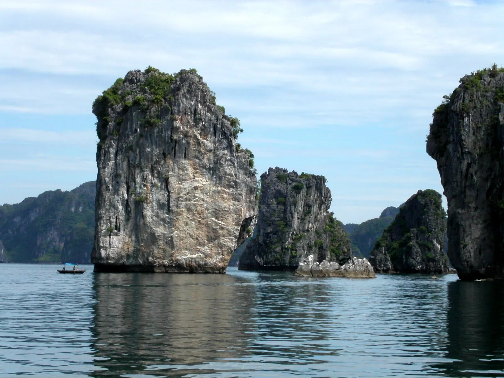

下龙鱿鱼饼（chả mực）
手工捶打的鱿鱼炸至金黄，弹牙酥脆——当地头号特产。

近 2000 座石灰岩岛屿矗立在翡翠色的海面上，宛如一幅流动的水墨画。下龙湾两度被联合国教科文组织列为世界自然遗产，在这里可以在游船上过夜，划皮艇穿过神秘的洞穴，欣赏夕阳洒落海湾。
正在加载天气...
点击月份查看是否适合出行
Humidity near 100%: floors and walls sweat, the sky is hazy and laundry won't dry; visibility on the bay and mountains can be poor.
Bring grippy shoes, pick rooms with a dehumidifier or air-con, and check the forecast before a scenic cruise.
School holidays make beaches their busiest of the year.
Travel midweek and book early for better prices.
农历节日每年日期不同——出发前请确认官方日期。
手工捶打的鱿鱼炸至金黄，弹牙酥脆——当地头号特产。
越南招牌米粉——海湾早晨的一碗热汤粉。
Hand-pounded squid cakes, fresh seafood picked at the market
Đường Cột Đồng Hồ, Bạch Đằng, Hạ Long 更新于 2026/09 报错Seafood: geoduck, horseshoe crab, steamed crab
Bãi Cháy, Hạ Long 更新于 2026/09 报错Steamed rice rolls with squid cake
Khu chợ Bãi Cháy, Hạ Long 更新于 2026/09 报错Grills, street snacks and seaside shows
Sun World Hạ Long, Bãi Cháy 更新于 2026/09 报错Stir-fried peanut worms, steamed clams
Chợ Hạ Long 2, Hòn Gai 更新于 2026/09 报错Mantis-shrimp noodle soup
Đường Hậu Cần, Bãi Cháy 更新于 2026/09 报错Beef or squid pho for breakfast
Khu chợ Hạ Long 1, Hòn Gai 更新于 2026/09 报错Lobster, Ha Long crab and blue crab
Khu Cột 5, Hạ Long 更新于 2026/09 报错每人参考价格。点击地址可在 Google 地图查看营业时间和最新评价。
两天一夜，在海湾中央看日出。
划过鳗鱼洞，进入隐秘的泻湖。
登上 400 多级石阶，俯瞰海湾全景。
25 分钟航程，从空中俯瞰海湾。
根据此目的地和月份推荐（在行程部分选择出发日期可更改月份）。勾选已打包的物品方便记忆。
发现价格、开放时间变了或店铺已关门？ 报错
500k–1.5M / 晚
Close to Tuan Chau pier, Sun World and plenty of restaurants.
2.5M–6M / 晚
Meals and kayaking included – book 1–2 weeks ahead.
1.2M–3M / 晚
Quiet, right next to the cruise port.
From Hanoi take a limousine van or express bus, ~2.5 h (180 km); or fly to Van Don (VDO) then drive ~1 h.
两人一晚参考房价，春节、假日和周末更贵。Việt Travel 不从预订网站收取佣金。
Việt Travel · 广宁 · 最佳时间: 4 月 – 10 月
从河内走高速公路约2.5小时，在巡州港登上游轮。
参观惊讶洞，在鳗鱼洞周边划皮划艇。
在甲板上看日落，享用海鲜晚餐和夜钓鱿鱼。
夜间散步片刻，然后回去休息
日出时打太极，然后登上提托普山俯瞰全景。
参观门渔村，游轮退房后返回港口。
漫步下龙太阳世界，乘坐太阳摩天轮，入住白寨。
夜间散步片刻，然后回去休息
造型独特的“黑匣子”广宁博物馆。
乘坐女王缆车登上巴焦山，鸟瞰海湾。
夜间散步片刻，然后回去休息
行程结束：退房，购买当地特产后返程。
乘船前往吉婆岛，在兰夏湾划皮划艇。
逛夜市或美食街吃晚餐
入住吉婆镇，在海上浮排享用海鲜。
夜间散步片刻，然后回去休息
行程结束：退房，购买当地特产后返程。
在住处附近当地人多的小店吃早餐
前往汪秘，乘缆车登上安子山顶的铜寺。
在景点附近吃简单的米饭午餐
在住处附近吃晚餐——选当地人多的店
品尝灰水粽和安子竹笋。
行程结束：退房，购买当地特产后返程。
明细：预算
明细：舒适
明细：预算
明细：舒适
明细：预算
明细：舒适
不含前往下龙湾的机票/交通。参考价格，随季节变动。
想去多个地方？把下龙湾和其他目的地组合起来吧。
分享你的经历
读者照片
还没有照片——来第一个分享你在下龙湾的瞬间吧！
分享你的照片